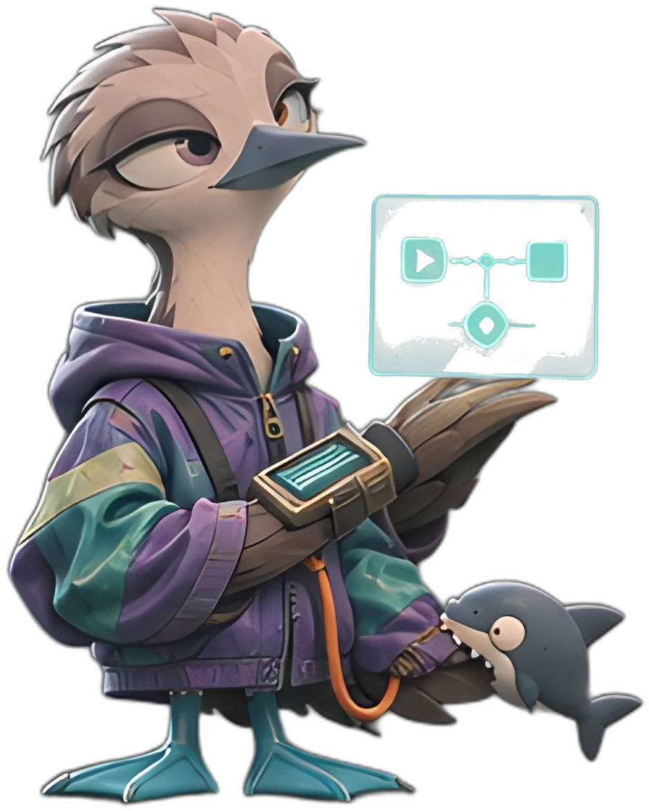

その集計、毎月
手で転記してますか。
「月末の集計、また手で転記してる」店舗別・カテゴリ別の集計表を、CSVとにらめっこしながら組み立てる作業です。あおあしは、その作業をExcelテンプレートかPower Automateのフローにして納めます。最初の一歩は、書面診断¥3,000。いまの集計手順を書いて送ると、消える作業と残る作業をメモ1枚にして、2日で返します。作るかどうかは、メモを見てから決めてください。
ルールで揃える。
その場で集計できます
26秒で見る、受け取ってから納品まで。
3問で測る、自動化ポテンシャル。
毎月の集計の状態を3問で測ります。答えると、自動化ポテンシャルスコア（100点満点）と、あなたの型が出ます。
毎月の集計・転記で、どれくらい時間が減らせそうですか。
転記ミスや二重入力は、どれくらい起きますか。
月末・締め日は、どれくらい追われますか。
スコアの付け方： かかる時間（40点満点）＋ミスの起きやすさ（30点満点）＋締め日の追われ感（30点満点）。これは簡易診断です。正確な判定は書面診断で行います。
Q1の回答（月時間）は、下の回収シミュレーターにも反映しました。
書面診断 ¥3,000 で、あなたの業務の棚卸しをする時間が消えている場所は、どこか。
月次集計で時間が消える場所は、大きく3つです。①が原因なのに③だけを自動にしても、揃っていない数字が速く資料に載るだけです。当てはまるものを1つ選んでください。最初の一手が分かります。
※ あおあしの受注実績はまだ0件です。これは実績紹介ではなく、書面診断¥3,000の切り分けメモで実際に判定する3つの型です。
当てはまるものを1つ選ぶと、最初の一手が出ます。
どの型かは、書面診断¥3,000の切り分けメモで、あなたの手順を見て判定します。
書面診断 ¥3,000 で、うちの型を判定する¥40,000は、何ヶ月で元が取れるか。
高いか安いかは、毎月減る集計時間で決まります。計算式は次の2つだけです。
あなたの数字で、計算できます
※ あなたの入力での試算です。実際に何時間減るかは業務によって異なります。書面診断¥3,000の切り分けメモで、先に確認できます。
| 毎月減る集計時間 | 月に浮く金額 | 回収までの月数 |
|---|---|---|
| 月2時間 | 月¥4,000 | 約10ヶ月40,000÷4,000＝10 |
| 月3時間 | 月¥6,000 | 約7ヶ月40,000÷6,000＝6.7 |
| 月5時間 | 月¥10,000 | 4ヶ月40,000÷10,000＝4 |
※ 時給¥2,000と削減時間は計算例で、実測・保証ではありません。実際に何時間減るかは業務によって異なります。書面診断¥3,000の切り分けメモで、先に確認できます。
回収した後も、テンプレート／フローは毎月そのまま使えます。集計の形が変わったときの手直しには、見守り・手直し ¥5,000/月（本編購入者向け）があります。
作れるものと、作らないもの。先に線を引いておきます。
集計自動化の対象は「毎月、決まった手順で繰り返す集計」だけです。当てはまるかは、下の表でその場で分かります。迷う場合は書面診断¥3,000の切り分けメモで先に判定し、対象外なら作り始める前に止めます。
作れるもの（月次集計の自動化）
- CSVの整形・取り込み（基幹システムや売上データのCSVを集計表の形に揃える）
- 店舗別・カテゴリ別の売上集計（表記ゆれをルールで揃えて集計）
- 経費・勤怠など定型データの月次集計表づくり
- 複数ファイルの統合と転記（コピペ転記の自動化）
- 月次レポート表の自動作成（前月比較まで）
作らないもの
- 会計・税務の判断が要る処理（勘定科目の設計、仕訳の判断）
- 営業資料・提案資料の企画と作成
- 数字の原因分析や経営判断（集計までが範囲です）
- 他システムの開発・改修や障害対応
- 毎月の作業そのものの代行（納めるのは、あなたの環境で毎月回るテンプレート／フローです）
「作らないもの」に当てはまる業務は、診断の段階で正直に対象外と伝えます。診断だけで終われば、費用は診断料¥3,000だけです。
相場と比べると、どこにいるか。
同じ「集計の自動化」を外に頼むと、いくらが普通なのか。他社の公開ページに出ている相場と、自社の値付けを並べて置きます。
| 頼み方 | 公開されている相場 | 出典 |
|---|---|---|
| VBA開発（小規模：データ転記・帳票の自動作成） | ¥30,000〜¥100,000 | スガサポの公開相場表 |
| 業務自動化の代行（1業務あたり） | ¥50,000〜¥150,000 | 社畜る（セブンコード）の公開ページ |
| 運用・保守（月額） | ¥20,000〜¥100,000/月 | 社畜る（セブンコード）の公開ページ |
| あおあし 本編（集計1プロセス・書面診断込み） | ¥40,000（税込・合計固定） | このサイト |
| あおあし 見守り・手直し（月額・本編購入者向け） | ¥5,000/月 | このサイト |
本編¥40,000は、公開相場の下のほうに置いてあります。しかも診断¥3,000込みで合計は固定。後から見積もりが膨らむ形ではありません。
※ 相場は2026年11月8日に各社の公開ページで確認した目安で、業務の内容と規模で変わります。あおあしの受注実績はまだ0件です。価格は実績ではなく、相場と作業量から置いています。
まず ¥3,000 の診断。作るなら ¥40,000 から。
集計自動化は、4段の階段です
1段目は書面診断 ¥3,000（税込・2日）。いまの集計手順をヒアリングシートに書いて送ると、自動化できる部分と残る部分を、メモ1枚で返します。2段目は本編 ¥40,000（税込・7日）。診断の中身をすべて含んで、集計表が出来上がるテンプレートかフローを作って納めます。診断から進んだ場合、診断料は差し引くので合計は¥40,000のままです。3段目はプレミアム ¥60,000（税込・10日）。本編をすべて含み、対象は集計3プロセスまで。4段目はオーダーメイド。既製の段に合わない業務は、範囲と金額を見積もりで決めてから始めます。
納品物の形を、そのまま触れます。
下の表は、架空の売上データ22件です。店舗名が「横浜 店」「ﾖｺﾊﾏ店」とバラバラに入っているところを見てください。「集計する」を押すと、表記をルールで揃えてから、月別と店舗×カテゴリ別に集計します。出てくる数字は、2026年9月 ¥366,600／10月 ¥386,300／合計 ¥752,900（22件）。Excelで同じ集計をした結果と一致する値です。本編（¥40,000）を買うと、この集計が、あなたのExcelで毎月回る形——テンプレートかフロー——で届きます。
| 受付日 | 店舗 | カテゴリ | 金額 |
|---|
※ 架空データのサンプルです。実在の顧客の実績ではありません。
作っているのは、
月次集計の現場にいる事務職です。
運営は「あおあし」です。通信建設業界の事務職・企画部門で、月次集計などの定型業務を回し、その自動化を扱ってきました。資格は日商簿記2級とITパスポートです。
この店の受注実績は、まだ0件です。判断材料として置いてあるのは、このページの触れるデモと、着手前に返す設計書の実物です。範囲と金額は、その設計書で先に決めます。
このサイトの作例・数字は、すべて架空データを使ったサンプルです。実在の顧客の実績ではありません。

払ったあと、何が起きるか。
- 01
申込
商品を選んで、購入先（ココナラ／note）のページで支払います。このサイトの中で、カード情報を入力する場面はありません。
- 02
書面診断 ¥3,000
いまの集計手順を切り分け、消える作業と残る作業をメモ1枚にして、2日で返します。診断料は、本編に進めば全額充当します。
- 03
ヒアリングシート
本編に進む場合、記入式のシートで業務の細部を確認します。シートが届いた日から、納期を数えます。
- 04
設計・納品
設計書で範囲と金額を固定してから作ります。テンプレート／フローを納め（本編7日）、使い方マニュアルと、納品後7日間の質疑応答が付きます。
- 05
見守り ¥5,000/月
納品したあとも、月1回の動作確認と小さな手直し。本編を買った方だけの、任意の継続プランです。
やり取りは、すべて書面・チャットで完結します。電話・会議はありません。
先に答えておきます。
支払いはどうなっていますか？
いまは、ココナラとnoteの決済の仕組みを使っています。このサイトから直接請求することはありません。ココナラでは、代金はいったんプラットフォームに預けられ、納品を確認するまで確定しません。Stripeでの直接決済は準備中です。使えるようになったら、このサイトの「購入する」ボタンから、そのまま買えるようにします。
業務データの扱いは大丈夫ですか？
お預かりしたデータは、この作業のためだけに使います。渡し方は案件ごとに先に決めておき、作業と質疑応答が終わった時点で削除します。実データではなく、項目名だけのサンプルや、名前を伏せたデータで進めることもできます。
電話や会議はありますか？
ありません。やり取りは、すべて書面・チャットです。ヒアリングも、記入式のシートでお願いしています。
書面診断のあと、本編に進むと合計はいくらですか？
合計は¥40,000（税込）のままです。ココナラの診断は¥3,000、ランサーズの診断は¥10,000ですが、どちらも本編に進めば診断料を全額差し引きます。診断だけで終われば、診断料だけです。
納期の数え方を教えてください。
ヒアリングシートを受け取った日から、暦日で数えます。書面診断は2日、本編は7日、プレミアムは10日、構造設計は5日です。設計書の確認をお待ちする期間も含みます。
Excelがない環境でも使えますか？
テンプレートは、Microsoft Excel（Microsoft 365／2019以降のデスクトップ版）が前提です。Power Automateのフローにする場合は、Microsoft 365のライセンスと接続設定が要ります。環境は設計書の段階で確認するので、合わない場合は、作り始める前に止められます。
納品後に直してほしい点が出たら？
3つに分けて対応します。使い方の質問は、納品後7日間、チャットでお答えします。合意した仕様どおりに動かない不具合は、初回の月次運用が終わるまで直します。仕様そのものの追加や変更は、別のお見積もりです。
既製プランに合わない業務でも頼めますか？
オーダーメイドで受けます。入口は書面診断か、チャットでの相談です。範囲と進め方を設計書にまとめ、金額と納期は見積もりで決めてから始めます。見積もりだけで終わっても構いません。
返金・キャンセルはできますか？
デジタル商品は、その性質上、納品後の返金・キャンセルは原則としてお受けできません。サービスは、制作に着手する前までキャンセルできます。詳しくは特定商取引法に基づく表記をご覧ください。

迷ったら、相談してみる
無料チェックリスト『その集計、自動化できるかどうかの見分け方』（A4・1枚）を、メールで送ります。集計作業の相談も同じフォームからどうぞ。内容を確認して返信します。自動化の実施は、書面診断¥3,000からの案内になります。
チェックリストを受け取る・相談する Substackで購読する（無料）